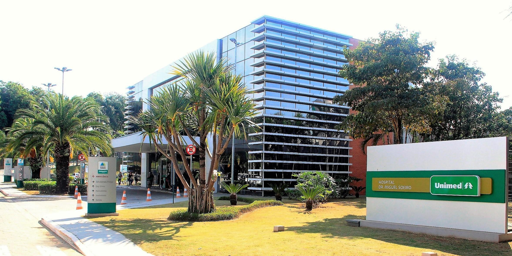

Bem-vindo ao nosso site, o destino ideal para aqueles que buscam soluções de transplante de fígado de alta qualidade e cuidados médicos especializados. Aqui na nossa clínica especializada em transplantes de fígado, dedicamo-nos a oferecer a você o melhor tratamento e suporte durante toda a jornada do transplante.
Nossa clínica é liderada por uma equipe de renomados especialistas em transplante de fígado, com vasta experiência e conhecimento no campo. Nossos cirurgiões altamente qualificados e equipe médica multidisciplinar estão comprometidos em fornecer cuidados de saúde excepcionais e resultados positivos para nossos pacientes.
Ao escolher nossa clínica, você pode esperar receber uma abordagem personalizada e compassiva para atender às suas necessidades específicas. Valorizamos cada paciente individualmente, entendendo a importância do transplante de fígado em sua vida e a urgência do tratamento. Nossa equipe dedicada trabalha incansavelmente para garantir a melhor qualidade de vida possível para você.
Além disso, nosso centro é equipado com as mais recentes tecnologias médicas e instalações de ponta, permitindo-nos realizar transplantes de fígado com precisão e eficiência. Trabalhamos em estreita colaboração com hospitais parceiros e equipes de doação de órgãos para garantir uma cadeia de suprimento confiável e rápida para os pacientes em necessidade.
No nosso site, você encontrará informações detalhadas sobre o processo de transplante de fígado, desde a avaliação inicial até o pós-operatório e acompanhamento. Oferecemos recursos educacionais para que você possa entender melhor o procedimento, suas opções de tratamento e os cuidados necessários para uma recuperação bem-sucedida.
Estamos aqui para ajudá-lo a dar o próximo passo em sua jornada rumo a uma vida saudável. Entre em contato conosco para marcar uma consulta e conversar com nossa equipe experiente. Nossa clínica especializada em transplante de fígado está comprometida em oferecer esperança, cura e um futuro melhor para todos os pacientes que atendemos.